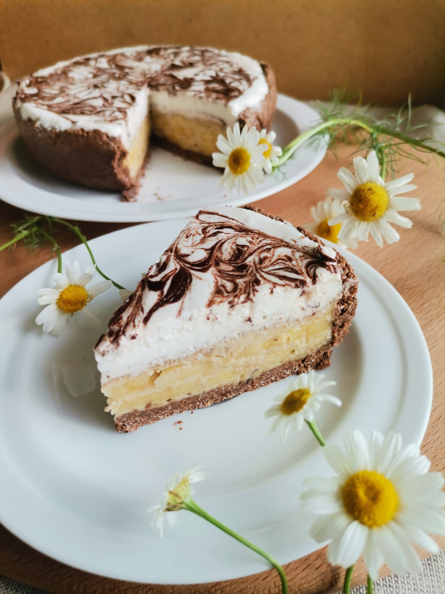

Banana Tart

Discription
Ingredients
- 140 g butter
- 140 g sugar
- 140 g flour
- 2 eggs
- 7 g baking powder
- 3 bananas
Steps
- Pre-cook the banana chips. Turn on the oven to heat up to 60 degrees.
- Wash and peel the banana and cut it into slices. The thinner the slices, the crispier they should be. Place the banana slices on a parchment-lined baking sheet and dry for two hours.
- When the chips are ready, preheat the oven again, but to 180 degrees.
- Prepare banana pie dough. Softened butter and sugar - 140 g each - mix and beat with a mixer, add 2 eggs and beat well again. Mix flour (140 g) with 7 g of baking powder and add everything to the liquid mixture. Next, knead the dough. Cut two bananas into small cubes and add to the dough, mix well.
- Line a baking dish with parchment paper and brush with butter. Pour the dough into a mold and place banana chips on top in a random pattern. Bake in the oven for 30 minutes. Let the cake cool in the pan, then remove and cut into pieces.